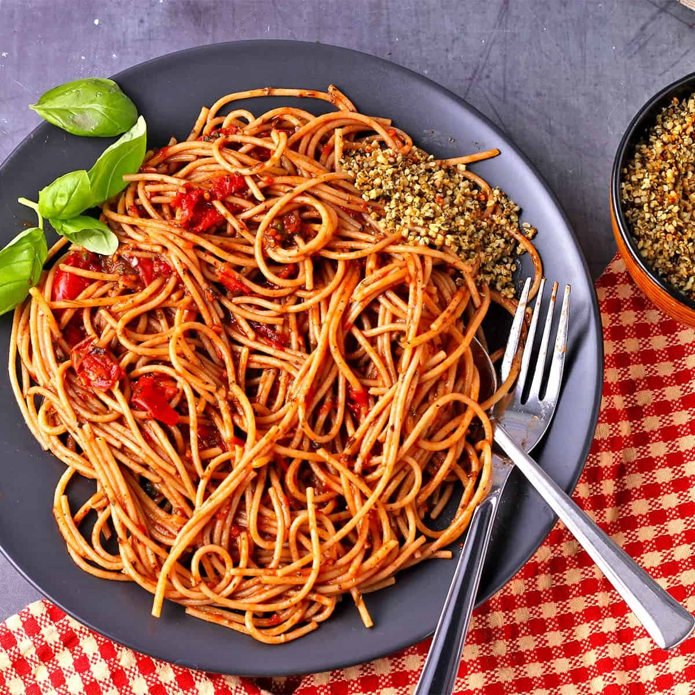

Spaghetti Recipe

Description
Homemade Spaghetti isn't as hard to make as it seems. Don't be intimidated by all the layers of delicious Italian flavor — try this homemade spaghetti recipe today!
Ingredients
- 1/2 pound ground beef
- 1/2 pound ground pork
- Canned tomatoes
- 2 tbsp parsley
- 1 clove garlic
- Dash of sugar
- Basil, oregano, salt, black pepper
- Parmesan cheese
Steps
- Cook the meat
- Cook the noodles/pasta
- Add spices
- Mix noodles with sauce
- Add cheese